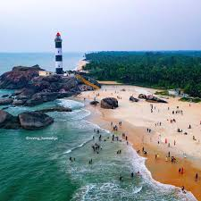
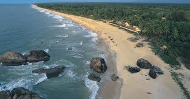
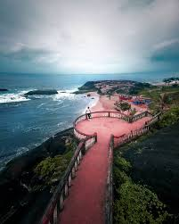
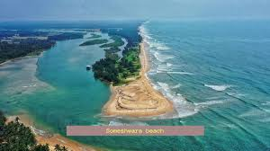
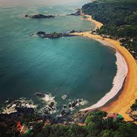
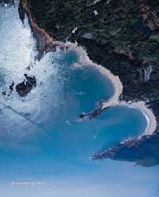
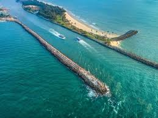
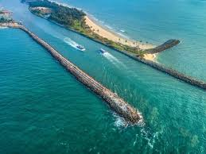

Malpe Beach is a lovely beach in Udupi district. The sand is white & soft.
There is a sea walk built at the end of Malpe Beach from where one can see amazing sunsets.
Also there are regular boats to take you to St Mary's Island which is a 15 min ride.
There are a number of water sports on the beach. Lovely beach to swim & relax in
>Kapu Beach


The beach is amazing,very clean and neat. The view from the lighthouse on the rocks near the
Beach is also amazing. The vehicle parking area for the vehicles is close to the beach.
The beach is not littered with plastic and other food items and the local youngsters who
manage the beach boats and games for the children very courteous. The vehicle parking area for the vehicles is close to the beach.
The beach is not littered with plastic and other food items and the local youngsters who
manage the beach boats and games for the children very courteous. A pretty clean beach. not too crowded.
perfect place to enjoy sunset and spend quality time with family and friends..
someshwara Beach


On our road trip to Coastal Karnataka, which circled through Mangalore, Udupi and Murudeshwar
along with some other places like Bekal as well (which is technically in Kerala), we visited a
lot of beaches of Karnataka.To be honest, most of the beaches of Karnataka are very clean.
And that is really impressive. However, the beaches here are not as “happening” with party
scenes as the beaches of Goa. And also don’t have too many beach side resorts like the ones
you get along the rest of the west coast of India. Nevertheless, if you know me, I am driven
to beaches for the tranquility. And not for the party scene. So, to me the beaches of Karnataka
appear as really beautiful and unexplored.
tanir bavi beach
However, of all the beaches that we visited on our coastal Karnataka road trip,
I particularly liked the Kapu beach in Udupi. If you are looking for an uncrowded beach
with basic facilities and azure blue waters then head to Kapu beach in Udupi. So,
let me take you through my evening spent at Kapu beach Udupi. I am sure by the end of this journey,
you would have fallen in love with Kapu Beach just like I did..
OM beach


beach is located almost 5km before the main town of Udupi when you drive from Mangalore to Udupi.
The signboards in English spell it as “Kaup beach”. But locals pronounce it as “Kapu beach”.
There are several roads that diverse from the highway which lead to the Kapu beach.
And each one has a large sign board on it indicating the diversion to take for the beach.
So, basically it is very easy to spot the way to the Kapu beach Udupi when you are on the
Mangalore – Udupi Highway.
 


 However, of all the beaches that we visited on our coastal Karnataka road trip,
I particularly liked the Kapu beach in Udupi. If you are looking for an uncrowded beach
with basic facilities and azure blue waters then head to Kapu beach in Udupi. So,
let me take you through my evening spent at Kapu beach Udupi. I am sure by the end of this journey,
you would have fallen in love with Kapu Beach just like I did..
However, of all the beaches that we visited on our coastal Karnataka road trip,
I particularly liked the Kapu beach in Udupi. If you are looking for an uncrowded beach
with basic facilities and azure blue waters then head to Kapu beach in Udupi. So,
let me take you through my evening spent at Kapu beach Udupi. I am sure by the end of this journey,
you would have fallen in love with Kapu Beach just like I did..